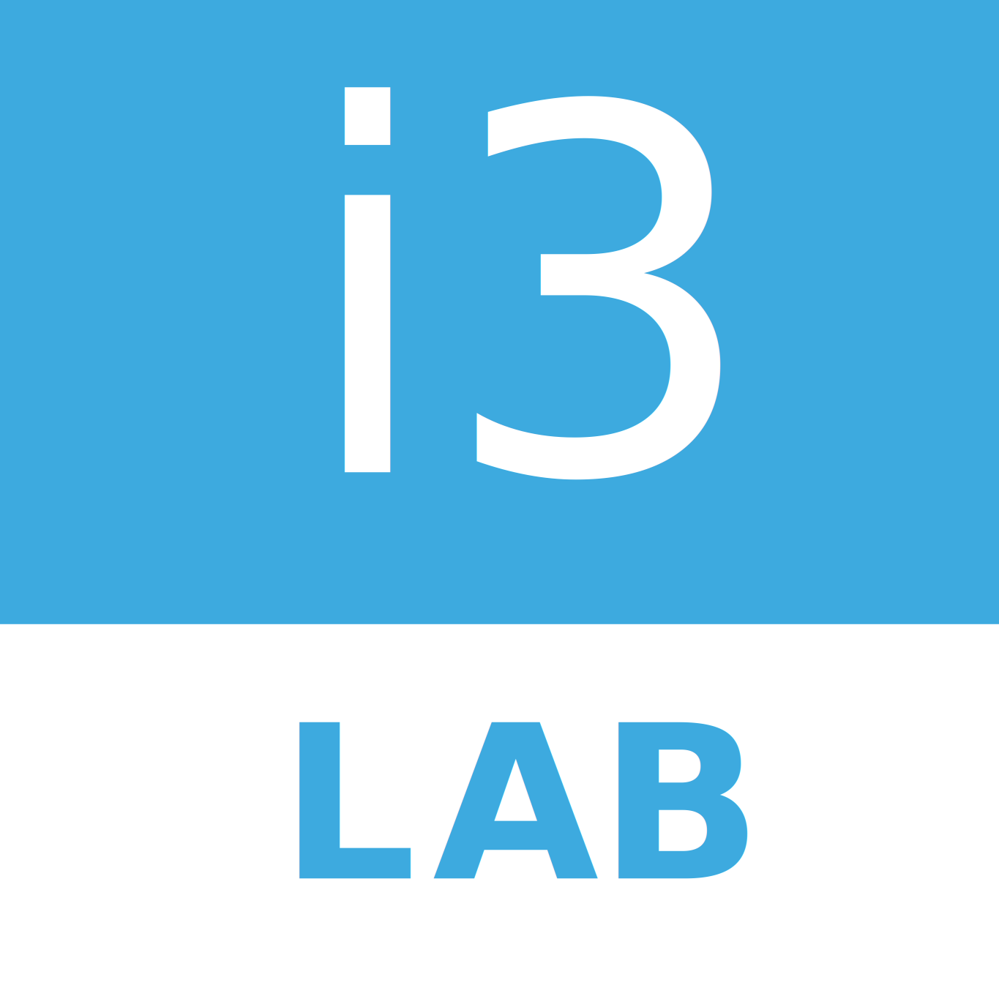
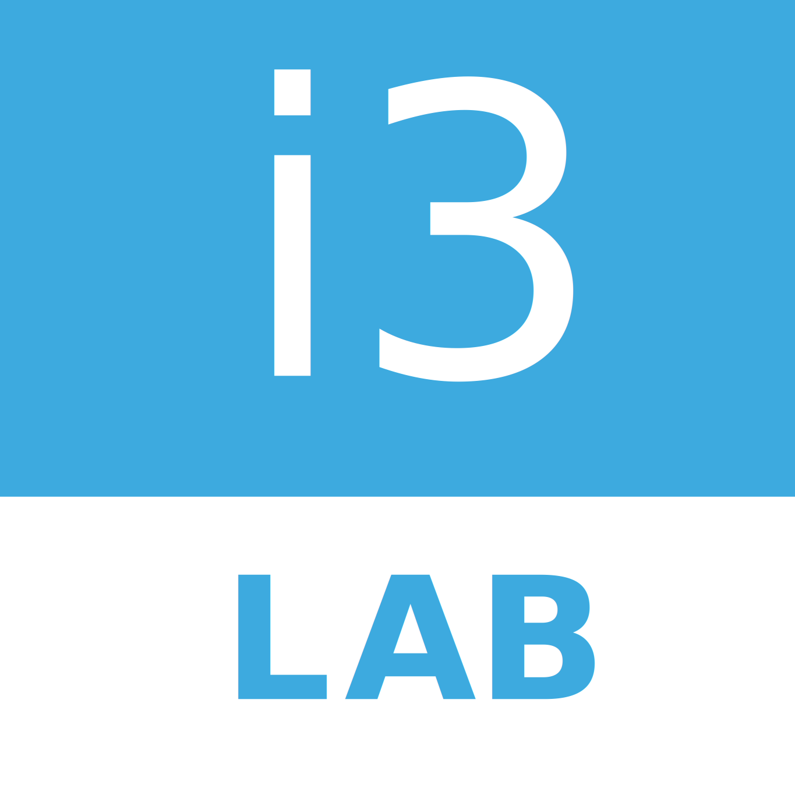

About the Summer School
The First International Summer School on LLM-based Agents for Software Engineering aims to cover several aspects related to the use of LLM-based agents for software development. It serves as a meeting point for learning and discussing the latest trends related to the application of Artificial Intelligence techniques in software development.
The school features a panel of high-level speakers with extensive experience in the research lines pursued within the program.
Key Topics:
Agents for SE Tasks
Requirements, coding, testing, deployment, and other software engineering activities augmented by LLM-based agents.
Evaluation & Benchmarking
Monitoring and evaluation frameworks for agentic systems in software engineering contexts.
Hybrid Teams
Human-agent collaboration methodologies and frameworks for effective software development.
Chairs:

Roberto Rodríguez Echeverría
Associate Professor, University of Extremadura
Roberto Rodríguez-Echeverría, PhD, is an Associate Professor of Computer Languages and Systems Department at the University of Extremadura (Spain). He has published more than 60 scientific publications in journals and international conferences. He has also been involved in numerous competitive projects and contracts with institutions and industry. His research interests include Artificial Intelligence (AI), AI in Healthcare and Model-Driven Software Development, among others. Recently, he has been heavily involved in launching a new spin-off, MetrikaMedia, which provides a state-of-the-art SaaS solution for measuring media contents.

José María Conejero
Associate Professor, University of Extremadura
José María Conejero is an Associate Professor in the Department of Computer Languages and Systems Department at the University of Extremadura (Spain). In 2010, he obtained his PhD in Computer Engineering. He has co-authored over 50 articles in prestigious international journals and conferences and has served as a reviewer or program committee member for many other international journals and conferences. His research interests include Artificial Intelligence, Big Data, and Model-Driven Software Development, among others. He has also been involved in numerous competitive research projects, as well as in contracts with both public and private entities. Most recently, he has co-founded MetrikaMedia, a startup and spin-off of the University of Extremadura.
Organizers:
i3Lab by Quercus Software Engineering Group and INTIA (Instituto Universitario de Tecnologías Informáticas Aplicadas), Universidad de Extremadura.
Agenda
(Provisional - Subject to updates)
| Time | Monday, 1st Sept | Tuesday, 2nd Sept | Wednesday, 3rd Sept |
|---|---|---|---|
| 09:30 | Registration | Multi-agents for code generation. Jie Zhang | Oracle |
| 10:00 | School Opening | ||
| 10:30 | Davide Di Ruscio | IBM | Massimo Tisi |
| 11:30 | Coffee break | Coffee break | Coffe break |
| 12:00 | Jesús M. González Barahona | From workflow-based to fully-agentic applications: smolagents and LangGraph. Antonio García Domínguez | Merve Astekin |
| 13:00 | Lunch | Lunch | Lunch |
| 14:30 | Workshop 1. LLMs para TDD. Jesús M. González-Barahona | Workshop 2. Development of agentic applications with human-in-the-loop via LangGraph. Antonio García Domínguez | Workshop 3. Multi-Agent LLMs and Knowledge Graphs for Monitoring and Sustaining Software Systems |
| 17:30 | |||
| 19:30 | Tourism activity | ||
| 20:30 | Gala Dinner |
Speakers
(To be announced - Sample data below)

Davide Di Ruscio
Università degli Studi dell'Aquila
Davide Di Ruscio is a Full Professor at the University of L'Aquila, specializing in Software and Model-Driven Engineering. He’s an active researcher, editor, and project lead in areas like domain-specific languages, model evolution, and software recommendation systems.
Jesús M. González Barahona
Institution 2
Short bio excerpt for Speaker 2
Jie M. Zhang
King College’s London, UK
Short bio excerpt for Speaker 3

Antonio García Domínguez
University of York, UK
Dr. Antonio Garcia-Dominguez is a Senior Lecturer at the University of York, specializing in model-driven engineering and software testing, and leads AI agent work in the EU MOSAICO project.
Massimo Tisi
IMT Atlantique, Nantes, France
Short bio excerpt for Speaker 5
Merve Astekin
SINTEF Digital, Norway
Merve Astekin is a Research Scientist at SINTEF Digital, focusing on sustainable AI and energy-efficient software systems, with recent work on LLMs for edge devices and intelligent agentic methods.
Speaker 7
Institution 7
Short bio excerpt for Speaker 7
Speaker 8
Institution 8
Short bio excerpt for Speaker 8
Speaker 9
Institution 9
Short bio excerpt for Speaker 9
Target Audience
This summer school is ideal for:
PhD Students
Primarily those in early stages, but also others interested in applying these techniques to their research.
University Professors
Educators seeking to integrate the school's topics into their courses or curricula.
Industry Professionals
Software development practitioners aiming to enhance productivity through new AI techniques.
Venue & Dates

About Cáceres
Discover Cáceres, a magnificent UNESCO World Heritage city founded in 25 BC that seamlessly blends Roman, Islamic, Gothic and Renaissance influences. Its perfectly preserved medieval quarter features imposing city walls, noble houses, and towers that transport visitors back through centuries of Spanish history.
Beyond its rich historical legacy, modern Cáceres thrives as a cultural center, home to the internationally acclaimed Helga de Alvear Museum of Contemporary Art. The city's exceptional culinary scene is crowned by Atrio, a three-Michelin-starred restaurant nestled within the ancient walls, offering a perfect fusion of tradition and innovation.
Wandering through Cáceres' cobblestone streets reveals hidden plazas, palatial homes with distinctive coats of arms, and impressive Gothic churches. Surrounded by the enchanting Extremadura landscape, the city proudly preserves its heritage while embracing its future as a candidate for European Capital of Culture 2031.


Click on any image to enlarge it
Accommodation
Cáceres offers a wide range of accommodation options. Special rates may be available for Summer School attendees at partner hotels.
Partner Hotels (Examples):
Gran Hotel Don Manuel
Special UEx rates may apply, < 3 km from venue
University Residences (Potential Option):
As the school is outside the main academic term, university residences might have availability (low occupancy expected).
Residencia Universitaria Mario Roso de Luna
Registration Fee
FREE
Thanks to the generous support of our sponsors, registration for the School is completely free for all attendees.
Registration
The course is limited to 20–25 participants. Applications will be considered on a first-come, first-served basis; however, we reserve the right to decline applications from candidates whose background does not meet the course prerequisites.
To register in the Summer School, please fill out the form below or contact us directly via email (chemacm@unex.es).
Note: This form uses your default mail client to send the email.
Contact the Chairs
Roberto Rodríguez Echeverría
José María Conejero Manzano
Organizers

 


Sponsors

Social Events
Daily Lunches
Lunch will be provided at the venue and is included.
Guided City Tour
A guided tour of the Monumental City of Cáceres (UNESCO World Heritage site).
Gala Dinner
Join us for a gala dinner.